专题06 整式加减实际应用的三种考法

考点01 收费、计费问题
考点02 方案设计问题
考点03 新定义问题

考点01  收费、计费问题
收费、计费问题
1．现有一种新型网约车是一种全无人自动驾驶的网约车，已经在全国多个城市开放运营．某城市的新型网约车的计价规则如表：
计费项目 | 里程费 | 时长费 | 远途费 |
单价 | 2元/公里 | 0.5元/分钟 | 0.4元/公里 |
（注：车费由里程费、时长费、远途费三部分构成，其中里程费按行车的实际里程计算，时长费按行车的实际时间计算，远途费的收取方式为：行车里程15公里以内（含15公里）不收远途费，超过15公里的，超出部分每公里加收0.4元．）
(1)若小东乘坐新型网约车，行车里程为20公里，行车时间为20分钟，则需付车费多少元？
(2)若小明乘坐新型网约车，行车里程为a公里，行车时间为b分钟，请分别计算当 和当
和当 时，小明应付车费多少元？（用含a，b的式子表示，并化简）
时，小明应付车费多少元？（用含a，b的式子表示，并化简）
(3)小王和小张各自乘坐新型网约车，小王比小张的行车里程少3公里，行程结束后反而多付了6元，两人计费项目也相同（远途费为0时视为没有这个计费项目），那么这两辆新型网约车的行车时长相差多少分钟？
2．如图，这是淇淇家新添置的一套住房的平面图及其尺寸数据（单位：m）．

(1)请用含有a、b的式子表示淇淇家这套住房的总面积．
(2)经测量得 ，
， ，购买时房价为
，购买时房价为 万元
万元 ，在计算房价时需另外加
，在计算房价时需另外加 的公摊面积，求淇淇家这套住房的总价格．
的公摊面积，求淇淇家这套住房的总价格．
(3)淇淇的爸爸想把主卧、次卧铺上木地板，其余部分铺瓷砖，已知每平方米木地板的费用为200元，每平方米瓷砖的费用为100元，在（2）的条件下，求淇淇家整个房屋铺完地面所需的费用．
3．某地区实施阶梯电价制，居民生活用电（一户一表）价格方案如下：
档次 | 月用电量 | 电价（元/度） |
第一档 | 月用电量 | 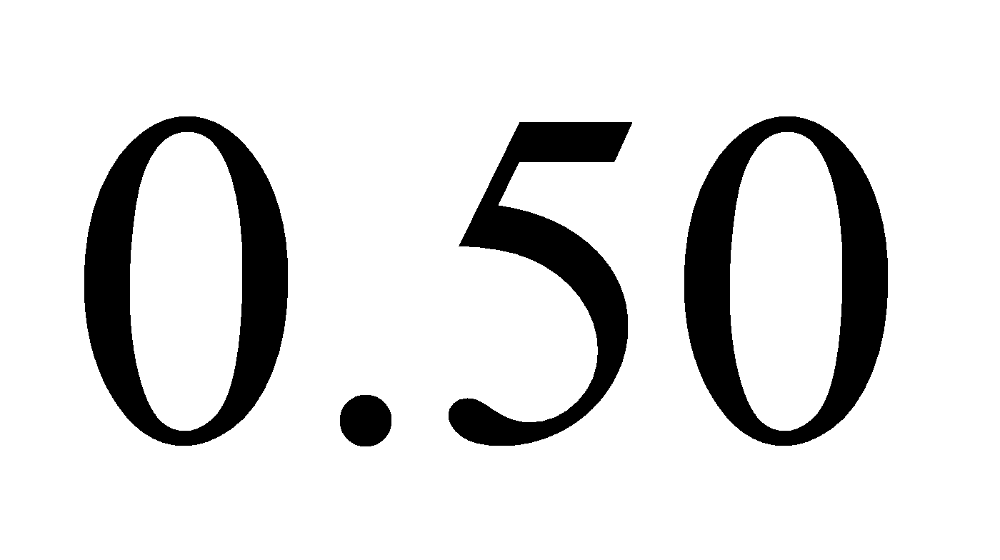 |
第二档 | 200度 |
|
第三档 | 月用电量 |
|
 度
度 月用电量
月用电量 400度
400度
 400度
400度
例：若某用户2014年9月份的用电量为300度，则需缴电费为：
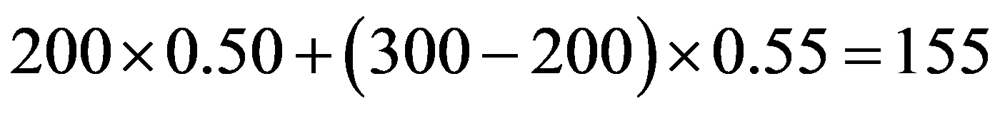
（元）．(1)填空：如果小华家2014年9月份的用电量为100度，则需缴电费______元；
(2)如果小华家2014年10月份的用电量为 度（其中
度（其中
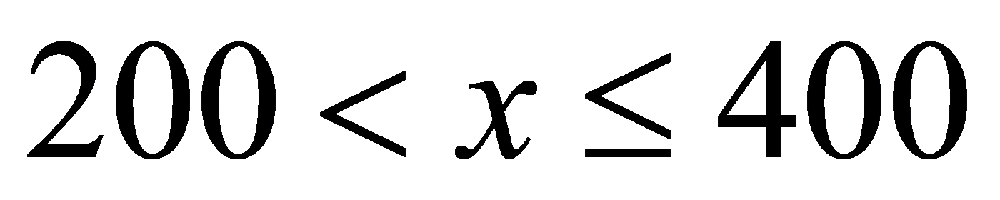
），则需缴电费多少元？（用含的代数式表示，并化简）(3)如果小华家2014年11、12两个月共用电600度，已知12月份的用电量比11月份多．设11月份的用电量为 度，则小华家这两个月共需缴电费多少元？（结果可用含的代数式表示，并化简）
度，则小华家这两个月共需缴电费多少元？（结果可用含的代数式表示，并化简）
4．现有一种新型网约车是一种全无人自动驾驶的网约车，已经在全国多个城市开放运营，某城市的新型网约车的计价规则如表：
计费项目 | 里程费 | 时长费 | 远途费 |
单价 | 2元/公里 |
| 1元/公里 |
 元/分钟
元/分钟（注：车费由里程费、时长费、远途费三部分构成，其中里程费按行车的实际里程计算，时长费按行车的实际时间计算，远途费的收取方式为：行车里程15公里以内（含15公里）不收远途费，超过15公里的，超出部分每公里加收1元．）
(1)若小东乘坐新型网约车，行车里程为20公里，行车时间为20分钟，则需付车费多少元？
(2)若小明乘坐新型网约车，行车里程为a公里，行车时间为b分钟（a，b为整数），请分别计算当和当
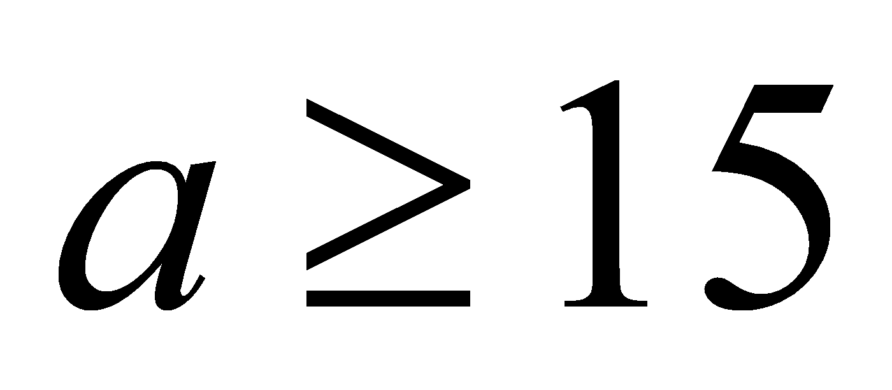
时，小明应付车费多少元？（用含a，b的式子表示，并化简）5．为了加强公民的节水意识，合理利用水资源，某市采用价格调控手段来达到节水的目的，该市自来水收费价格见表注（水费按月结算）：
每月用水量 | 单价（元/立方米） |
不超过6立方米的部分 | 2 |
超过6立方米的部分但不超过10立方米的部分 | 4 |
超过10立方米的部分 | 8 |
(1)若某户居民2月份用水 立方米，则应收水费多少元？
立方米，则应收水费多少元？
(2)若某户居民3月份共用水 立方米，则应收水费多少元？
立方米，则应收水费多少元？
(3)若某户居民4月份共用水x立方米（ ），则应收水费多少元？（用含x的式子表示）
），则应收水费多少元？（用含x的式子表示）
6．某地区有长方形水稻试验田，试验田的长为米，宽为 米，试验田分两部分，一部分为新型水稻种植田（阴影部分），另一部分为水渠，水渠有两种图形（如图所示），
米，试验田分两部分，一部分为新型水稻种植田（阴影部分），另一部分为水渠，水渠有两种图形（如图所示）， 型试验田如图
型试验田如图 ，水渠为半径是米的扇形，
，水渠为半径是米的扇形， 型试验田如图
型试验田如图 ，水渠是边长为米的正方形．
，水渠是边长为米的正方形．

(1)用含、、的式子表示，型试验田的水稻种植面积是______平方米，型试验田的水稻种植面积是______平方米．（保留 ）
）
(2)若型水稻试验田有 块，型水稻试验田有块，则用含、、的式子表示新型水稻种植田的总面积是多少平方米？（取）
块，型水稻试验田有块，则用含、、的式子表示新型水稻种植田的总面积是多少平方米？（取）
(3)在（）的条件下，若
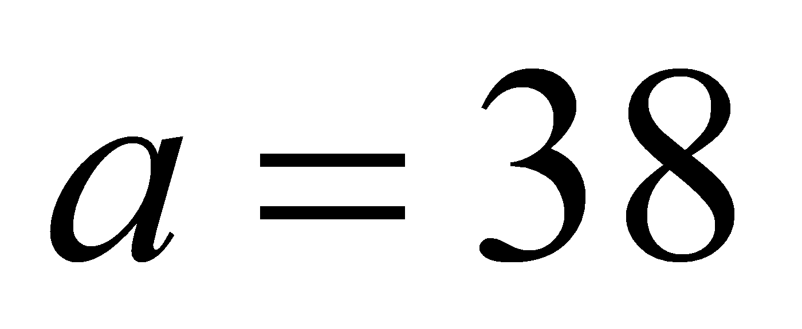
，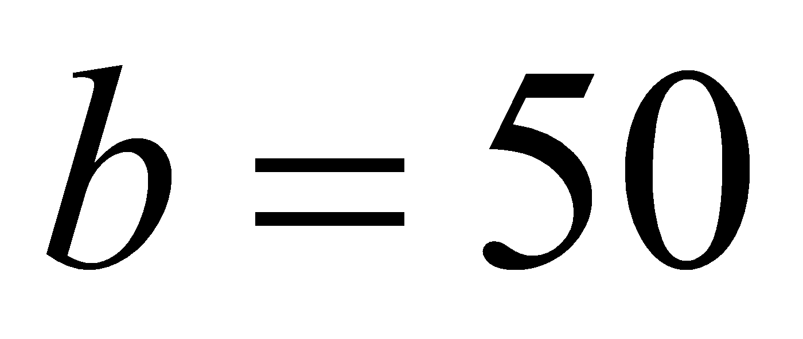
， 时，在“农民丰收节”到来之际，水稻成熟，计划由甲型收割机收割总面积的
时，在“农民丰收节”到来之际，水稻成熟，计划由甲型收割机收割总面积的 ，其余面积由乙型收割机收割，甲型收割机收割每平方米水稻的费用为
，其余面积由乙型收割机收割，甲型收割机收割每平方米水稻的费用为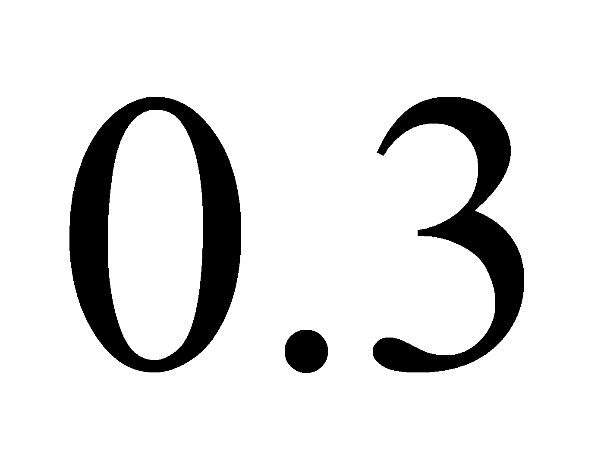
元，乙型收割机收割每平方米水稻的费用为元，则种植田全部收割完需要多少元钱？（取）7．每年“双11”天猫商城都会推出各种优惠活动进行促销，今年，张阿姨在“双11”到来之前准备在三家天猫店铺中选择一家购买原价均为1000元/条的被子若干条．已知三家店铺在非活动期间，均在原价基础上优惠20%销售，活动期间在此基础上再分别给予以下优惠：
A店铺：“双11”当天购买可以再享受8折优惠；
B店铺：商品每满800元可使用店铺优惠券50元，同时每满400元可使用商城“双11”购物津贴券50元，同时“双11”当天下单每单还可立减60元（例如：购买2条被子需支付 元）；
元）；
C店铺：“双11”当天下单可享立减活动：①每条立减100元（购买10条以内，不包括10条）；
②每条立减160元（10条及10条以上）．享受“立减”优惠后，店铺还可实行分期付款，先付总购物款的一半，一年后再一次性付清余下的货款（注：银行一年定期的年利率为 ）．
）．
(1)若在A店铺5条被子作一单购买，需支付______元．
若在B店铺5条被子作一单购买，需支付______元．
若在C店铺5条被子作一单购买，至一年后全部付清共用去______元．
(2)若张阿姨在“双11”当天下单，且购买了a条同款被子，请分别用含a的代数式表示在这三家店铺的购买费用．（说明：张阿姨要买的a条被子作一单购买）
8．现有一种新型网约车是一款全自动无人驾驶的网约车，已经在全国多个城市开放运营．某城市的新型网约车的计价规则如下表：
计费项目 | 里程费 | 时长费 | 远途费 |
单价 |
|
|
|
（注：车费由里程费、时长费、远途费三部分构成，其中里程费按行车的实际里程计算，时长费按行车的实际时间计算，远途费的收取方式为：行车里程 公里以内（含公里）不收远途费，超过公里的，超出部分每公里加收1元．）
公里以内（含公里）不收远途费，超过公里的，超出部分每公里加收1元．）
(1)若小东乘坐新型网约车，行车里程为 公里，行车时间为分钟，则需付车费多少元？
公里，行车时间为分钟，则需付车费多少元？
(2)若小明乘坐新型网约车，行车里程为a公里，行车时间为b分钟（a，b为整数），请分别计算当
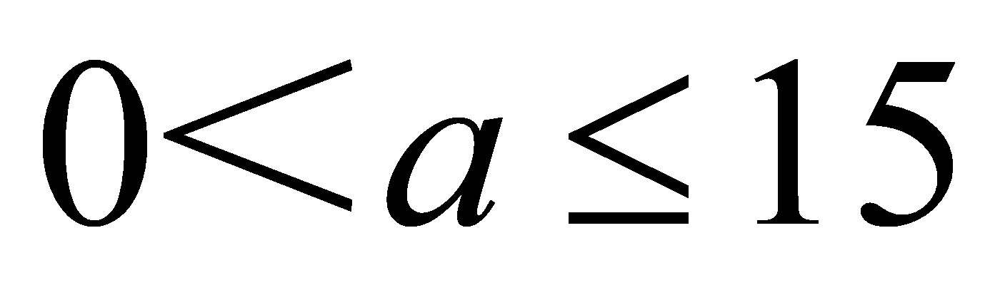
和当 时，小明应付车费多少元？（用含a，b的式子表示，并化简）
时，小明应付车费多少元？（用含a，b的式子表示，并化简）(3)小王和小张各自乘坐新型网约车，小王比小张的行车里程少3公里，行程结束后反而多付了6元，两人计费项目也相同（远途费为0时视为没有这个计费项目），那么这两辆新型网约车的行车时长相差多少分钟？
考点02 方案设计问题
9．中山市某楼盘准备推出一套小户型商品房，该户型商品房的单价是 万元
万元 ，面积如图所示（单位：
，面积如图所示（单位： ，卫生间的宽未定，设宽为
，卫生间的宽未定，设宽为 ），售房部为购房者提供了以下两种优惠方案：
），售房部为购房者提供了以下两种优惠方案：
方案一：整套房的单价为万元，其中厨房可免费赠送一半的面积；
方案二：整套房按原销售总金额的9折出售．

(1)用含x的式子表示该户型商品房的面积及方案一、方案二中购买一套该户型商品房的总金额；
(2)当 时，通过计算说明哪种方案更优惠？优惠多少万元？
时，通过计算说明哪种方案更优惠？优惠多少万元？
10．某水果超市最近新进了一批百香果，每斤8元，为了合理定价，在第一周试行机动价格，卖出时每斤以10元为标准，超出10元的部分记为正，不足10元的部分记为负，超市记录第一周百香果的售价情况和售出情况：
星期 | 一 | 二 | 三 | 四 | 五 | 六 | 日 |
每斤价格相对于标准价格（元） |
|
|
|
|
|
|
|
售出斤数 | 20 | 35 | 10 | 30 | 15 | 5 | 50 |


(1)这一周超市售出的百香果单价最高的是星期几？最低单价比最高单价少多少元？
(2)求出这一周超市出售此种百香果的总利润是多少？
(3)超市为了促销这种百香果，决定从下周一起推出两种促销方式：
方式一：购买不超过5斤百香果，每斤13元，超出5斤的部分，每斤打8折；
方式二：每斤售价12元．
①顾客买 斤百香果，则按照方式一购买需要______元，按照方式二购买需要______元．（请用含a的代数式表示，结果要求化简）
斤百香果，则按照方式一购买需要______元，按照方式二购买需要______元．（请用含a的代数式表示，结果要求化简）
②如果某顾客决定买30斤百香果，通过计算说明应该选择上述两种促销方案中的哪种方式购买更省钱．
11.【综合与实践】
【知识背景】为丰富市民和游客的文化生活，青秀山举办花灯展．花灯的制作方法主要包括以下步骤：①设计；②选材；③骨架制作；④裱糊（将绸缎等材料粘贴在骨架上）；⑤安装灯珠和电路；⑥装饰．
【目标设定】某兴趣小组模仿图1的造型制作花灯．如图2，花灯由4条骨架构成，依次记为
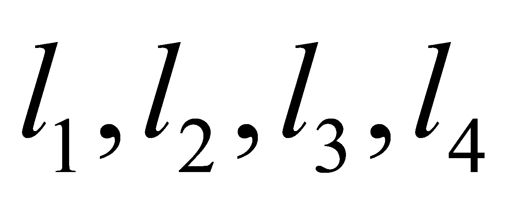
，每条骨架包括半圆和两条垂直于地面的相等线段．【步骤实施】 的长为2米，半圆的半径为米，完成以下任务（取3）．
的长为2米，半圆的半径为米，完成以下任务（取3）．
任务一：求中线段 的长；
的长；
任务二：如图2所示，与 的间距为
的间距为 米，相邻两条骨架的间距由内自外依次递增
米，相邻两条骨架的间距由内自外依次递增 米，每条骨架的长度如下表所示，请直接写出骨架
米，每条骨架的长度如下表所示，请直接写出骨架
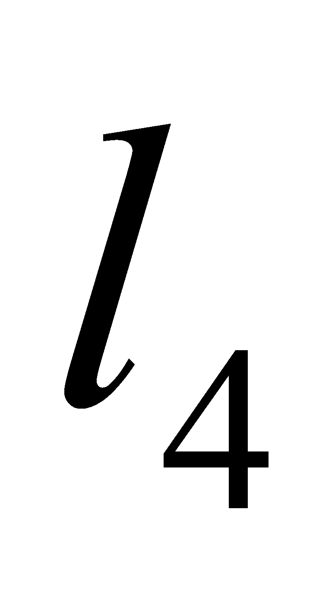
的长度；任务三：求裱糊面积（即与地面所围成的图形面积）；
任务四：若装饰花灯需要裱糊材料和灯珠盏，在购买材料时有以下两种方案可供选择：
方案1：裱糊材料每平米30元，每盏灯珠10元；
方案2：裱糊材料每平米20元，每盏灯珠15元．
选择哪一种方案更划算？并说明理由．
骨架 |
|
| 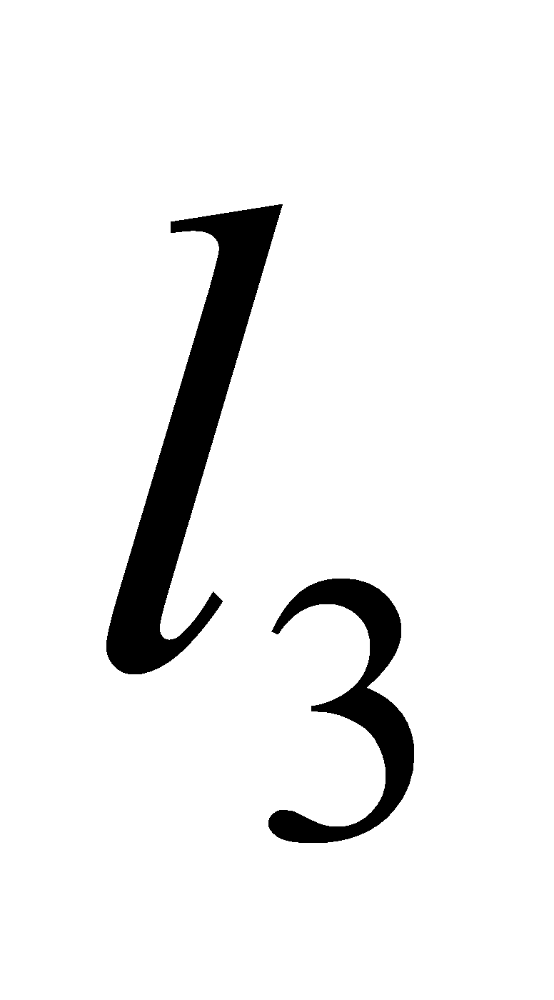 | |
骨架的长度（单位：米） | 2 |
| 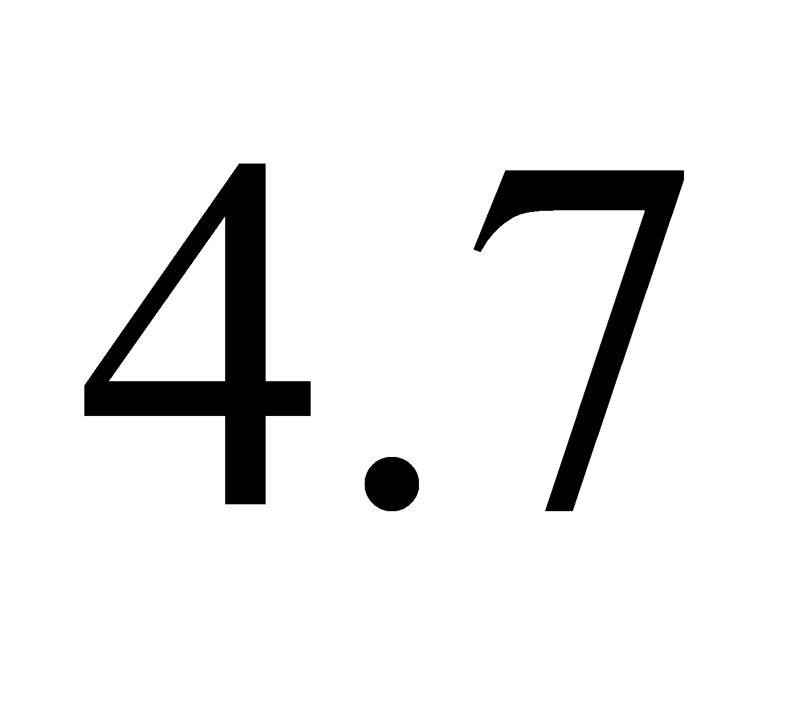 | ▲ |

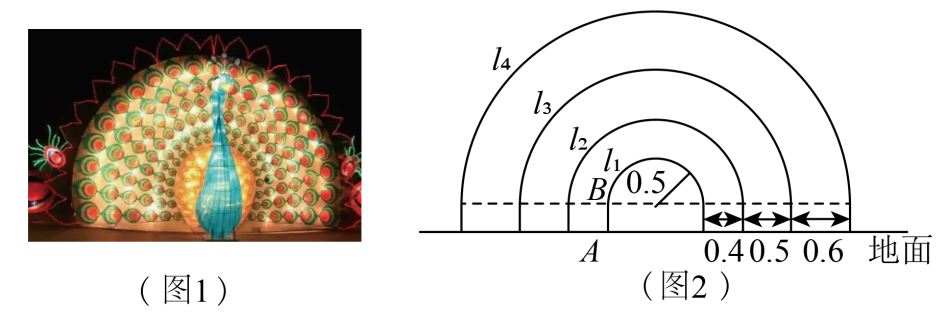
12．为了丰富阳光运动会，学校准备订购一批篮球和跳绳，经过市场调查后发现， 两商店以同样的价格出售同种品牌的篮球和跳绳，已知篮球每个定价120元，跳绳每条定价20元．经洽谈：
两商店以同样的价格出售同种品牌的篮球和跳绳，已知篮球每个定价120元，跳绳每条定价20元．经洽谈：
A商店优惠方案：买一个篮球送一条跳绳；
B商店优惠方案：篮球和跳绳都按定价的 付款．
付款．
已知要购买篮球60个，跳绳条
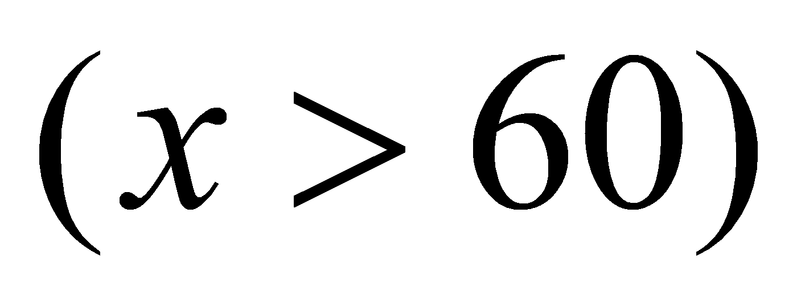
．(1)若到A商店购买，一共需付款________元；若到B商店购买，一共需付款________元；（用含的代数式表示）
(2)当 时，请通过计算说明此时用哪个商店购买较为合算？
时，请通过计算说明此时用哪个商店购买较为合算？
(3)当时，你能给出一种更为省钱的购买方案吗？请写出你的购买方案，并计算需付款多少元？
13．综合与实践
问题情境
劳动基地的蔬菜都成熟了，学校计划将蔬菜送给敬老院的老人，现有长为a厘米，宽为b厘米，高为c厘米的箱子若干，将蔬菜装满每个盒子后需利用打包带进行打包．
方案设计
如图，小红和小明各设计了一种打包方式（接头处的长度不计，本题所有问题只考虑打包带的长度，不考虑其他影响因素）．
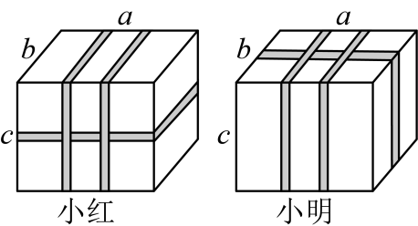
问题解决
(1)用含a，b，c的式子表示这两种打包方式所用的打包带的长度：小红的方案中所用打包带的长度为________厘米；小明的方案中所用打包带的长度为________厘米．
(2)当
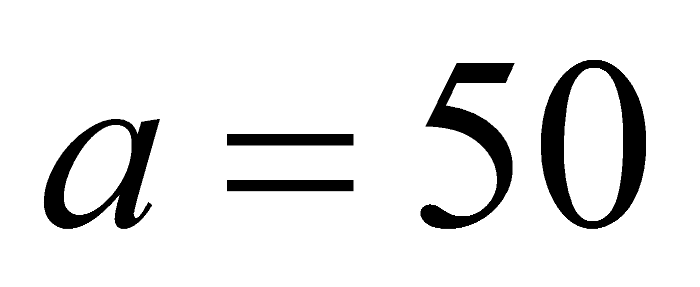
厘米， 厘米，
厘米， 厘米时，小红和小明设计的这两种打包方式所用的打包带的长度分别是多少？
厘米时，小红和小明设计的这两种打包方式所用的打包带的长度分别是多少？(3)当 时，比较小红和小明设计的方案中，哪种所用的打包带的长度更短．
时，比较小红和小明设计的方案中，哪种所用的打包带的长度更短．
14．七星商场冬季新款到货，A款服装每件进价180元，B款服装每件进价240元．由于“双十一购物狂欢节”，京东，天猫等电商平台推出了预售，满减，送券，领红包等优惠活动，11月份该商场所有商品销量均减少．为吸引顾客，11月份商场对全场打折促销．店长根据市场调查推出两种促销方案如下（两种方案不能叠加享受）：
方案一：顾客所购商品的原价总和每满300元送60元的现金券，无论用券与否原总价打九折；若有券，折后可用券抵扣．
方案二：
原价总和 | 优惠标准 |
不超过300元的部分 | 九折优惠 |
超过300元但不超过600元的部分 | 七折优惠 |
超过600元但不超过900元的部分 | 六折优惠 |
超过900元的部分 | 五折优惠 |
(1)小天一次性购买物品的原价为750元，则方案一实际付款为 元；则方案二实际付款为 元；
(2)小七去七星商场购物，商品原价为a（ ）元，试用含a的式子表示出小七选择方案二应付的费用；（结果需化简）
）元，试用含a的式子表示出小七选择方案二应付的费用；（结果需化简）
(3)已知小天选择方案一购物，小七选择方案二购物，他们所购物品原价总和为1500元，且小七所购物品的原总价m元，且高于小天．两人实际付款一共多少元（请用含m的代数式表示并化简）？为使消费者获利更多，店员建议他们两人组合，一次性购买所有物品，并且选择最优惠的购买方案，如果两人组合购买，实际付款多少元？
15．某校决定为体育组添置一批体育器材．学校准备在网上订购一批某品牌足球和跳绳，在查阅天猫网店后发现足球每个定价140元，跳绳每条定价30元．现有A、B两家网店均提供包邮服务，并提出了各自的优惠方案．A网店：买一个足球送一条跳绳；B网店：足球和跳绳都按定价的 付款．已知要购买足球60个，跳绳x条（
付款．已知要购买足球60个，跳绳x条（
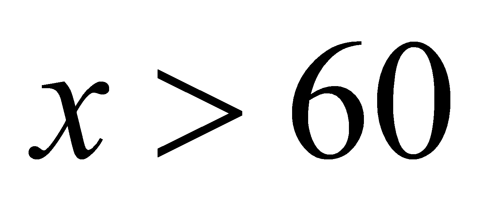
）．(1)若在A网店购买，需付款 元（用含x的代数式表示）；若在B网店购买，需付款 元（用含x的代数式表示）；
(2)若x=100时，通过计算说明此时在哪家网店购买较为合算？
(3)当x=100时，你能给出一种更为省钱的购买方案吗？试写出你的购买方法，并计算需付款多少元？
16．甲、乙两商场分别出售A型、B型两种电暖气，零售价及运费如下表所示：
商场 | A型电暖气 | B型电暖气 | 运费 | |
A电暖气 | B电暖气 | |||
甲 | 200元 | 300元/台 | 10元/台 | 10元/台 |
乙 | 220元/台 | 290元/台 | 免运费 | 12元/台 |
 台
台(1)某公司计划在甲商场或乙商场选择一家采购两种电暖气共100台，其中A型电暖气需要买x台．
①请分别求在两家商场购买电暖气所需要的总费用，结果用含x的代数式表示（总费用 购买价
购买价 运费）；
运费）；
②若需购买A型电暖气40台，在哪个商场购买划算？请说明理由．
(2)若可以同时在两家商场自由选择，还有更优惠的方案吗？请你为该公司设计一种方案．
17．小红、小明、小丽和小刚四位同学为了参加学习小组活动，需要购买一些笔记本和圆珠笔．已知笔记本的单价是 元，圆珠笔的单价是
元，圆珠笔的单价是 元，由小红和小明两人分别去买．小红买了3本笔记本，2支圆珠笔；小明买了4本笔记本，3支圆珠笔．
元，由小红和小明两人分别去买．小红买了3本笔记本，2支圆珠笔；小明买了4本笔记本，3支圆珠笔．
(1)小红和小明一共花了多少钱？
(2)他们两人谁花的钱多？多多少？
(3)由于四人要平摊费用，后来结算时，发现在买之前，小明给了小红一元钱，小丽给了小明二元钱；买完东西后，小红和小明身上都没钱了，而小丽和小刚都还有足够的钱．现在他们要马上结算，请你给他们设计一个结算方案，即谁给谁多少钱，才能使大家做到平摊费用，相互之间不欠钱．要说明理由，并写出计算化简过程．
考点03 新定义问题
18．阅读材料：已知一个两位数 ，十位数字为，个位数字
，十位数字为，个位数字 ，那么我们可以用
，那么我们可以用 表示这个数字
表示这个数字 ．依据上面的材料，回答下题：一个三位数
．依据上面的材料，回答下题：一个三位数 ，百位数字为，十位数字为，个位数字是
，百位数字为，十位数字为，个位数字是 ．
．
(1)请用含 的式子表示这个数；
的式子表示这个数；
(2)现在交换百位数字和个位数字，得到一个新的三位数 ，请用含的式子表示；
，请用含的式子表示；
(3)请用含的式子表示 ，并回答能被11整除吗？
，并回答能被11整除吗？
19．阅读材料：
材料1：如果一个三位数为
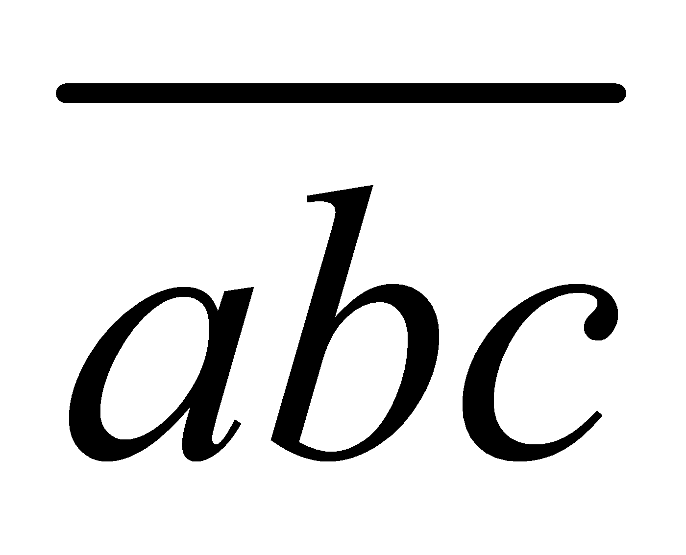
（表示百位数字为，十位数字为，个位数字为的三位数），我们可以将其表示为：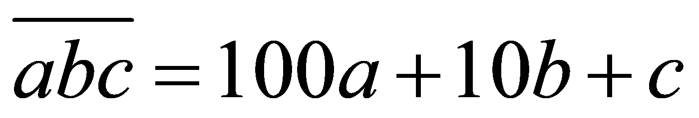
；材料2：如果一个三位数，满足
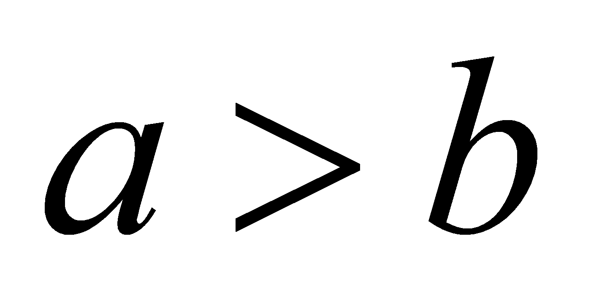
且 ，则称这个三位数为“谷数”．例如：427；515；109均为“谷数”；
，则称这个三位数为“谷数”．例如：427；515；109均为“谷数”；材料3：如果一个三位数，满足 且
且 ，则称这个三位数为“峰数”．例如：285；687，121均为“峰数”；
，则称这个三位数为“峰数”．例如：285；687，121均为“峰数”；
(1)已知：三位数 可表示为 ；三位数
可表示为 ；三位数
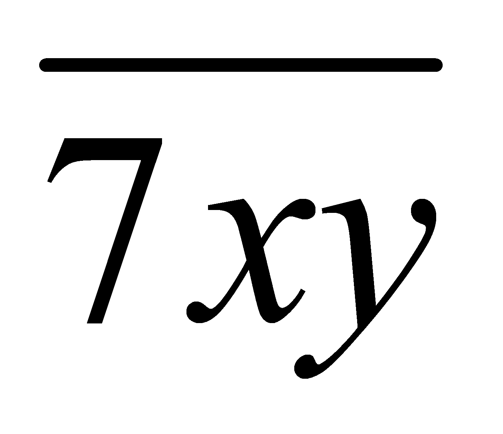
可表示为 ；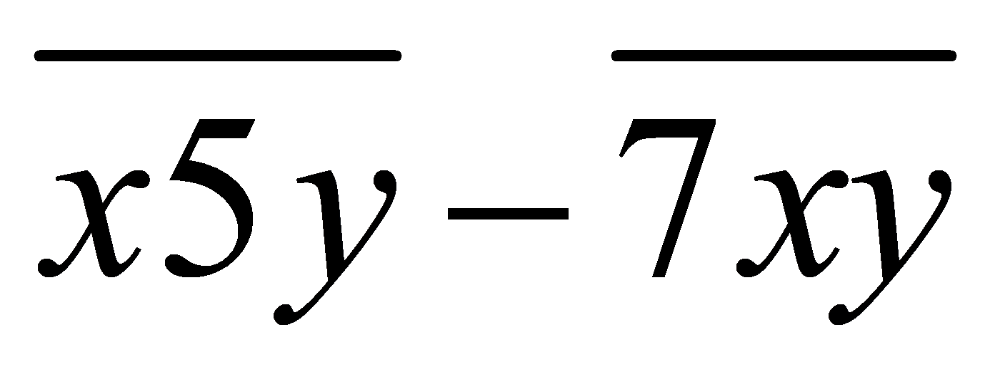
= ；(2)已知：三位数
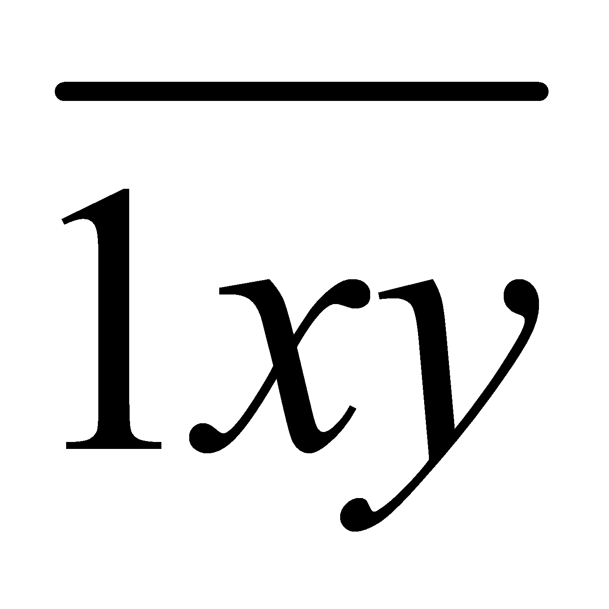
比三位数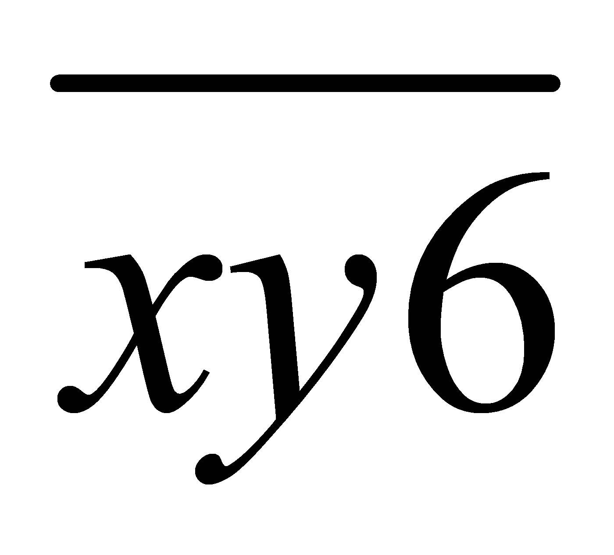
小284，求这两个三位数；(3)求三位数是峰数的一共有多少个，三位数是谷数的一共有多少个（直接写出答案）．
20．在数的学习过程中，我们总会对其中一柴具有某种特性的数充满好奇，例如：定义：对于一个各个数位上的数字均不为零的三位自然数m，若m的十位数字等于其个位数字的2倍，则称这个自然数m为“好数”，当三位自然数m为“好数”时，交换m的百位数字和十位数字后会得到一个新的三位自然数n，规定
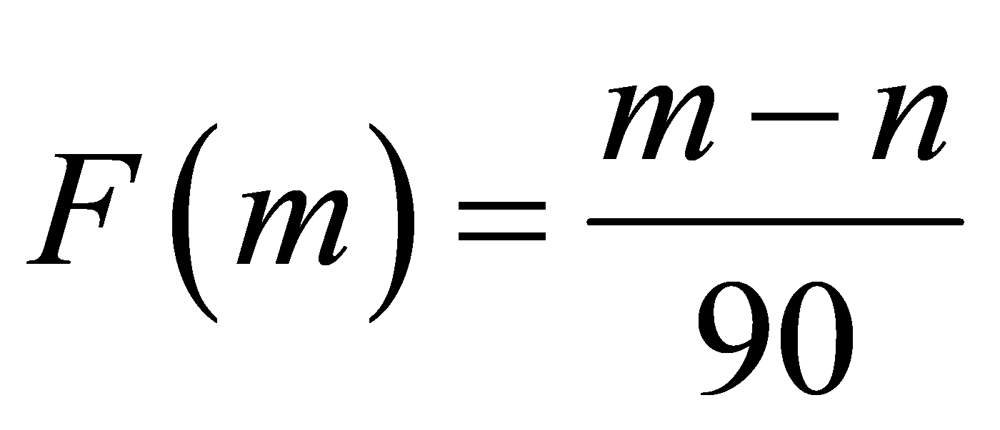
，例如：当 时，因为
时，因为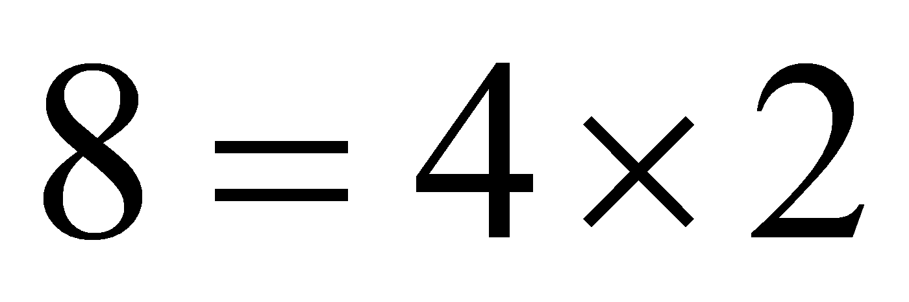
，所以 是“好数”，此时
是“好数”，此时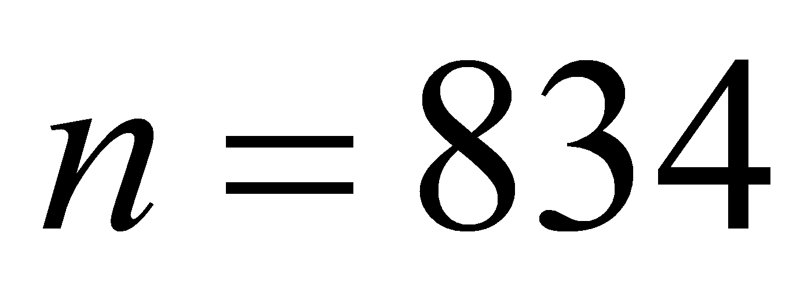
，则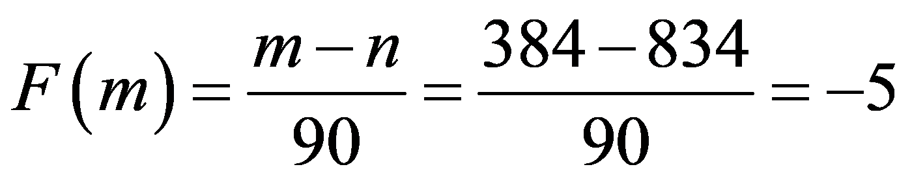
．(1)写出最大的好数和最小的好数，并分别求出它们的 值；
值；
(2)已知一个三位自然数t是“好数”，t的各个数位上的数字和记为k，若
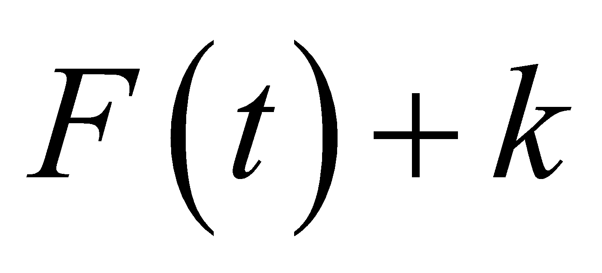
能被8整除，求所有满足条件的三位自然数t．21．【探索数的奇妙规律】
小明同学在学习数学时发现了一个有趣的规律：对于任意一个四位数
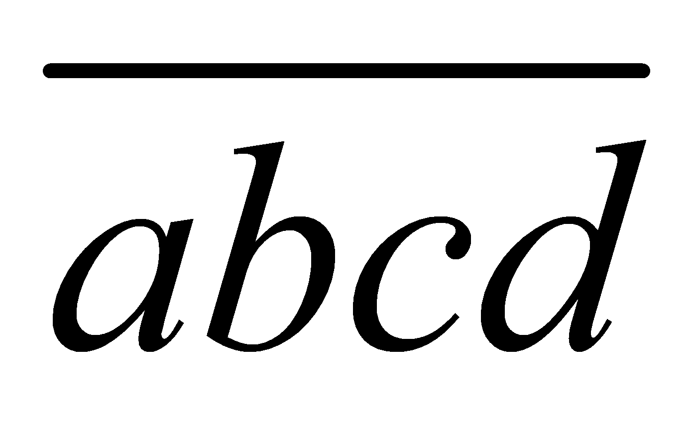
（定义： ，如果
，如果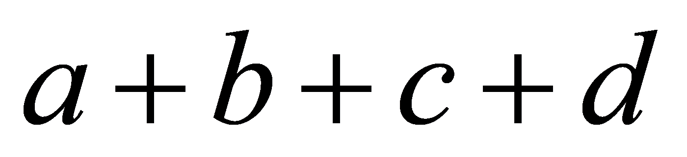
可以被整除，那么这个四位数可以被整除．例如，数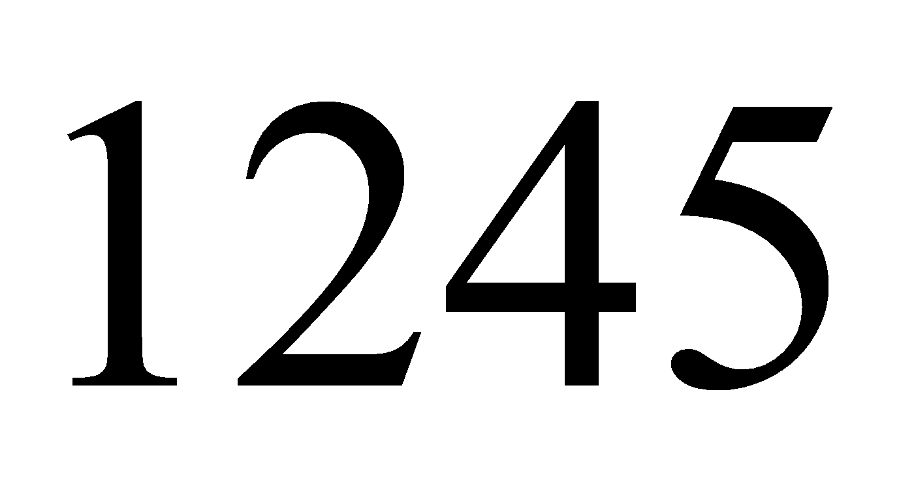
， ，能被整除，则能被整除；数
，能被整除，则能被整除；数 ，
， ，
， 不能被整除，则不能被整除．
不能被整除，则不能被整除．(1)根据规律，判断：① ；②
；② ；③
；③
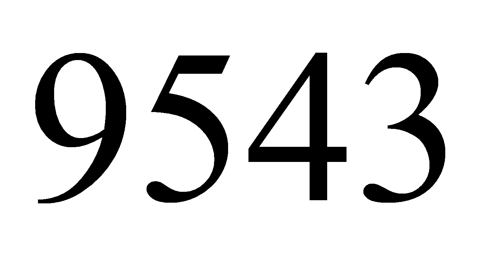
，其中可以被整除是 （填序号）；(2)如果可以被整除，证明四位数可以被整除；
(3)判断 是否可以被
是否可以被 整除，并说明理由．
整除，并说明理由．
22．定义：若一个多项式的各项系数之和为7的整数倍，则称这个多项式为“ 标准多项式”．例如：多项式
标准多项式”．例如：多项式
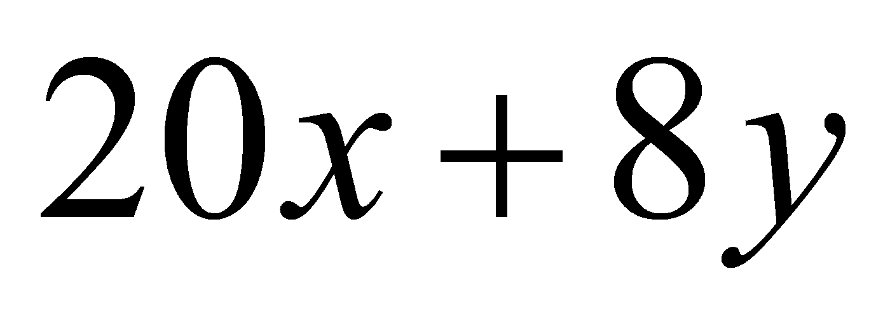
的系数和为 ，所以多项式是“标准多项式”．请根据这个定义解答下列问题：
，所以多项式是“标准多项式”．请根据这个定义解答下列问题：(1)在下列多项式中，属于“标准多项式”的是______；（填写序号）
① ；②
；② ；③
；③
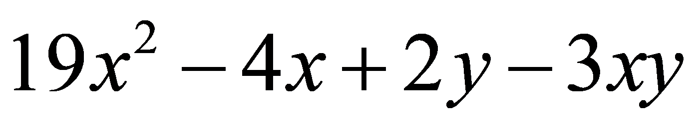
．(2)若多项式 是关于x，y的“标准多项式”（其中m、n均为整数），则多项式
是关于x，y的“标准多项式”（其中m、n均为整数），则多项式 也是关于x，y的“标准多多项式”吗？若是，请说明理由；若不是，请举出反例．
也是关于x，y的“标准多多项式”吗？若是，请说明理由；若不是，请举出反例．
(3)已知 ，
， ，
， ，且
，且 （其中m，
（其中m， ，t均为整数），请证明多项式
，t均为整数），请证明多项式 也是关于x，y的“标准多项式”．
也是关于x，y的“标准多项式”．
23．定义：一个三位正整数，如果十位数字恰好等于百位数字与个位数字之和的一半，我们称这个三位正整数为“半和数”．例如三位正整数 中，
中， ，所以，是半和数；又如
，所以，是半和数；又如 中，
中，
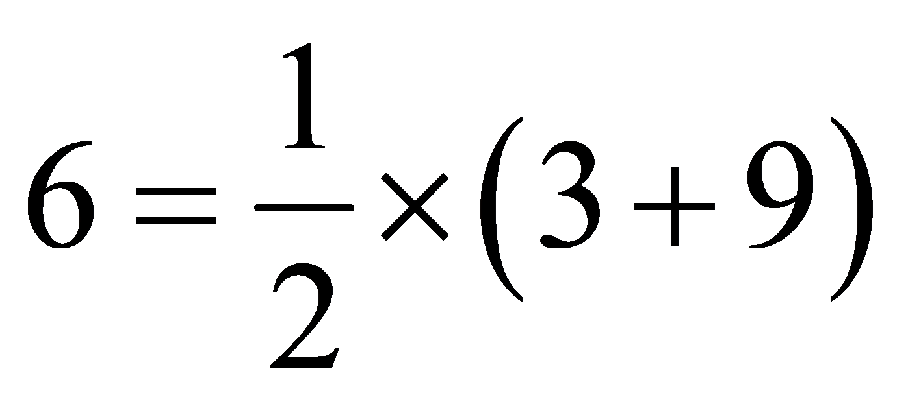
，所以，也是半和数．…任务：
(1)已知一个三位数是“半和数”，若它的百位数字是7，个位数字是1，则这个数是 ；若它的百位数字为a，个位数字为0，则十位数字为 ；这个数为 ；(用含a的代数式表示）；
(2)任意一个“半和数”的个位和百位数字调换得到一个新“半和数”，然后将新“半和数”与原“半和数”相加，结果是 的倍数．请你判断这一结论是否正确，并说明理由．
的倍数．请你判断这一结论是否正确，并说明理由．